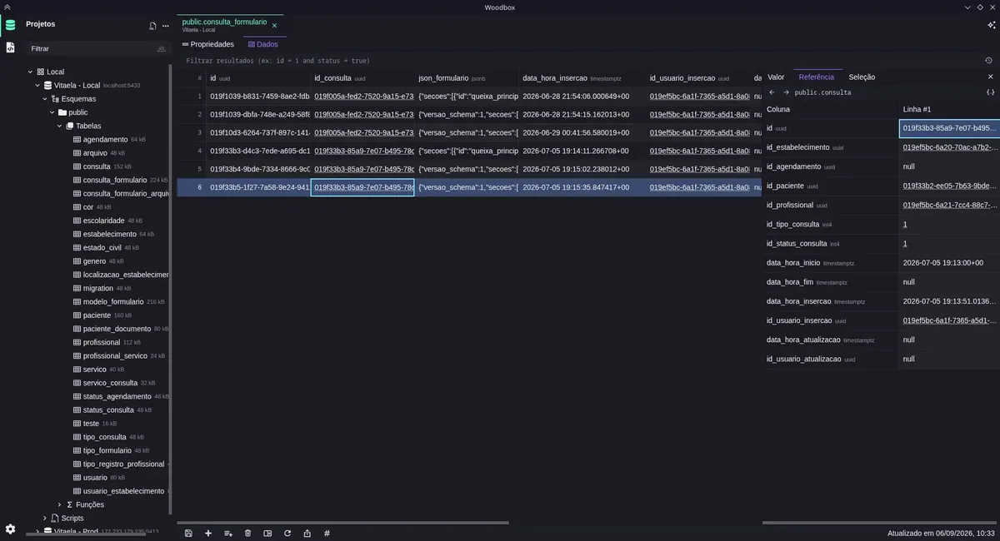

Your databases. Your workspace.
Explore tables, write SQL, and organize connections in a lightweight desktop app. From the first connection to the next query, everything stays in one place.

Browse and query without switching tools.
Organized projects
Group connections by client, product, or environment, then pick up right where you left off.
Open full imageLook beyond the rows
Browse data, filter results, and inspect columns, indexes, and relationships without leaving the table.
Open full image
SQL with less repetition
Autocomplete, reusable snippets, and selected-query execution, with queries and results neatly organized in tabs.
Open full image
Understand the structure
Check types, columns, and keys before you write a query. Table details are always one click from your data.
Open full image
A hand beside the editor
Generate, explain, and refine queries with the AI provider you choose. Prefer to write by hand? The editor works just as well without it.
Open full image
Find it from the keyboard
Press Ctrl/Cmd + K to find tables, functions, and scripts without losing your train of thought.
Open full image
Make it look yours
Pick a theme, from GitHub to Catppuccin, and adjust the colors of the editor, tables, and buttons.
Open full image
Keep the SQL you reuse
Save snippets with a name, a prefix, and a dialect, then export them whenever you need.
Open full imageRuns on your machine, on your terms
Everything you set up stays on your computer, and nothing requires an account.
-
Start without signing up
Install the app and connect your database. No Woodbox account needed.
-
Your workspace stays with you
Projects, connections, scripts, and preferences are saved locally. When you use AI, requests go to the provider you configured.
-
Open to your contributions
Explore the code, report issues, and suggest improvements on GitHub. Woodbox is MIT-licensed.
Get started in three steps
-
01
Create a project and add your database connection.
-
02
Explore tables and inspect your data structure.
-
03
Open the editor, run your SQL, and inspect the results.
Try Woodbox on your computer
Download the installer for Windows, macOS, or Linux straight from GitHub releases. Open source, with no sign-up.
- No sign-up
- MIT license
- Local-first